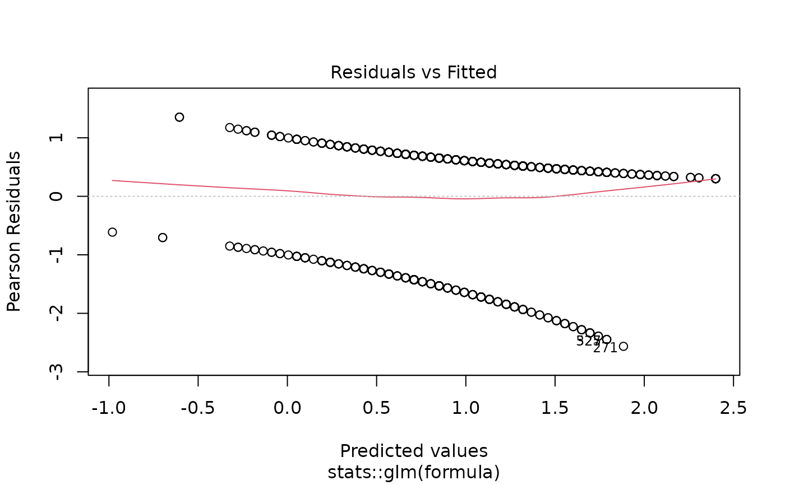
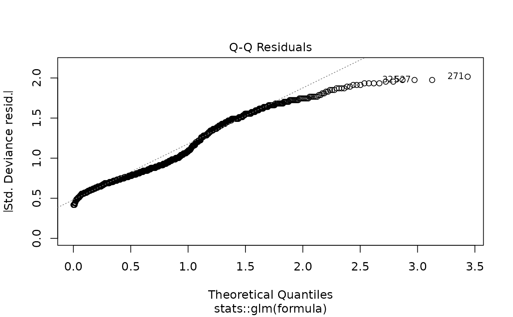
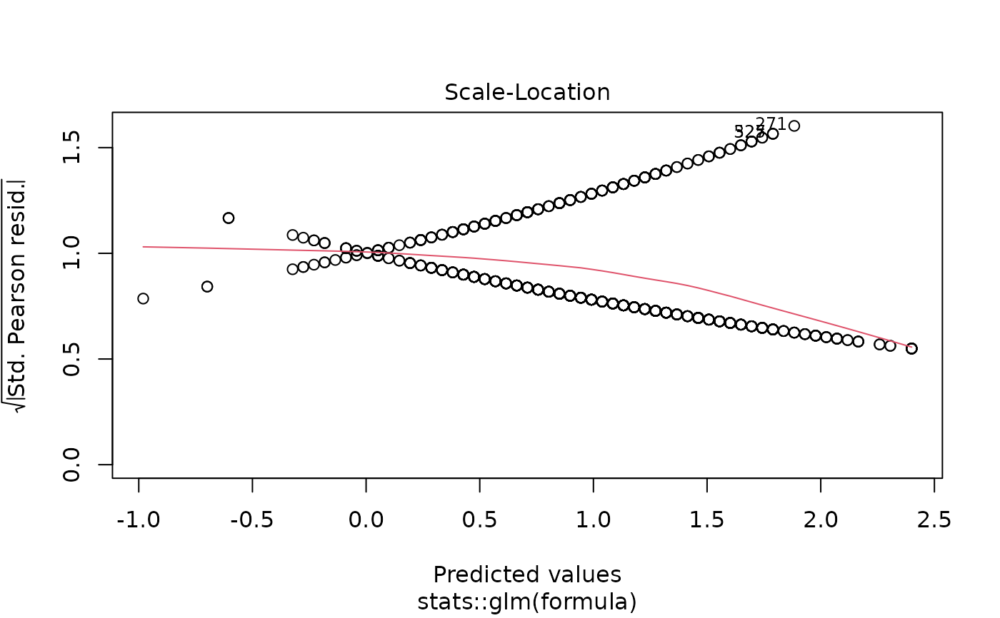
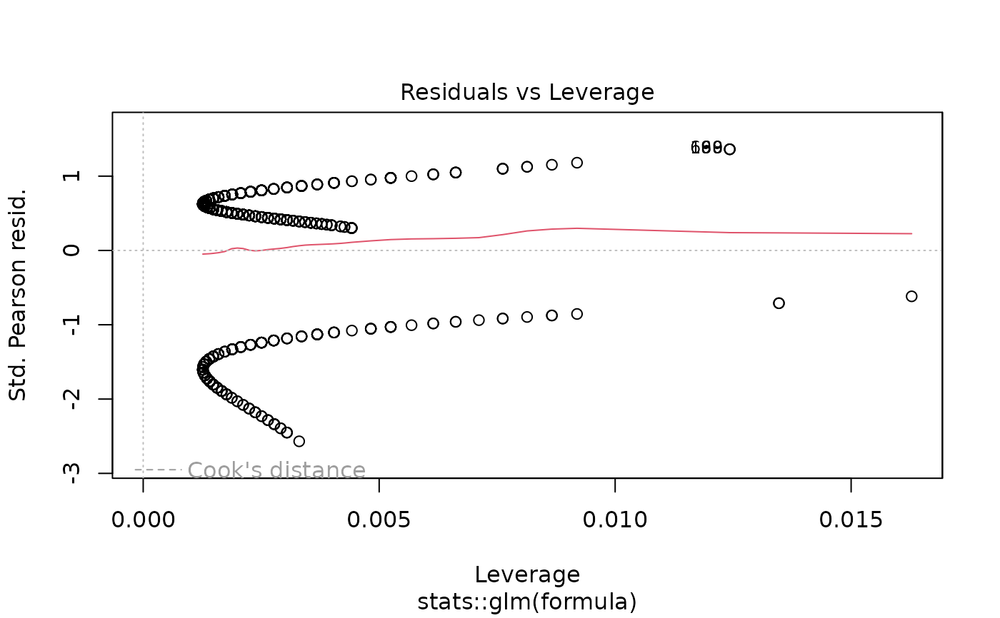

Performs comprehensive univariable (unadjusted) regression analyses by fitting separate models for each predictor against a single outcome. This function is designed for initial variable screening, hypothesis generation, and understanding crude associations before multivariable modeling. Returns publication-ready formatted results with optional p-value filtering.
Usage
uniscreen(
data,
outcome,
predictors,
model_type = "glm",
family = "binomial",
random = NULL,
p_threshold = 0.05,
conf_level = 0.95,
reference_rows = TRUE,
show_n = TRUE,
show_events = TRUE,
digits = 2,
p_digits = 3,
labels = NULL,
keep_models = FALSE,
exponentiate = NULL,
parallel = TRUE,
n_cores = NULL,
number_format = NULL,
verbose = NULL,
...
)Arguments
- data
Data frame or data.table containing the analysis dataset. The function automatically converts data frames to data.tables for efficient processing.
- outcome
Character string specifying the outcome variable name. For survival analysis, use
Surv()syntax from the survival package (e.g.,"Surv(time, status)"or"Surv(os_months, os_status)").- predictors
Character vector of predictor variable names to screen. Each predictor is tested independently in its own univariable model. Can include continuous, categorical (factor), or binary variables.
- model_type
Character string specifying the type of regression model to fit. Options include:
"glm"- Generalized linear model (default). Supports multiple distributions via thefamilyparameter including logistic, Poisson, Gamma, Gaussian, and quasi-likelihood models."lm"- Linear regression for continuous outcomes with normally distributed errors. Equivalent toglmwithfamily = "gaussian"."coxph"- Cox proportional hazards model for time-to-event survival analysis. RequiresSurv()outcome syntax."clogit"- Conditional logistic regression for matched case-control studies or stratified analyses."negbin"- Negative binomial regression for overdispersed count data (requires MASS package). Estimates an additional dispersion parameter compared to Poisson regression."glmer"- Generalized linear mixed-effects model for hierarchical or clustered data with non-normal outcomes (requires lme4 package andrandomparameter)."lmer"- Linear mixed-effects model for hierarchical or clustered data with continuous outcomes (requires lme4 package andrandomparameter)."coxme"- Cox mixed-effects model for clustered survival data (requires coxme package andrandomparameter).
- family
For GLM and GLMER models, specifies the error distribution and link function. Can be a character string, a family function, or a family object. Ignored for non-GLM/GLMER models.
Binary/Binomial outcomes:
"binomial"orbinomial()- Logistic regression for binary outcomes (0/1, TRUE/FALSE). Returns odds ratios (OR). Default."quasibinomial"orquasibinomial()- Logistic regression with overdispersion. Use when residual deviance >> residual df.binomial(link = "probit")- Probit regression (normal CDF link).binomial(link = "cloglog")- Complementary log-log link for asymmetric binary outcomes.
Count outcomes:
"poisson"orpoisson()- Poisson regression for count data. Returns rate ratios (RR). Assumes mean = variance."quasipoisson"orquasipoisson()- Poisson regression with overdispersion. Use when variance > mean.
Continuous outcomes:
"gaussian"orgaussian()- Normal/Gaussian distribution for continuous outcomes. Equivalent to linear regression.gaussian(link = "log")- Log-linear model for positive continuous outcomes. Returns multiplicative effects.gaussian(link = "inverse")- Inverse link for specific applications.
Positive continuous outcomes:
"Gamma"orGamma()- Gamma distribution for positive, right-skewed continuous data (e.g., costs, lengths of stay). Default log link.Gamma(link = "inverse")- Gamma with inverse (canonical) link.Gamma(link = "identity")- Gamma with identity link for additive effects on positive outcomes."inverse.gaussian"orinverse.gaussian()- Inverse Gaussian for positive, highly right-skewed data.
For negative binomial regression (overdispersed counts), use
model_type = "negbin"instead of thefamilyparameter.See
familyfor additional details and options.- random
Character string specifying the random-effects formula for mixed-effects models (
glmer,lmer,coxme). Use standard lme4/coxme syntax, e.g.,"(1|site)"for random intercepts by site,"(1|site/patient)"for nested random effects. Required whenmodel_typeis a mixed-effects model type unless random effects are included in thepredictorsvector. Alternatively, random effects can be included directly in thepredictorsvector using the same syntax (e.g.,predictors = c("age", "sex", "(1|site)")), though they will not be iterated over as predictors. Default isNULL.- p_threshold
Numeric value between 0 and 1 specifying the p-value threshold used to count significant predictors in the printed summary. All predictors are always included in the output table. Default is 0.05.
- conf_level
Numeric confidence level for confidence intervals. Must be between 0 and 1. Default is 0.95 (95% confidence intervals).
- reference_rows
Logical. If
TRUE, adds rows for reference categories of factor variables with baseline values (OR/HR/RR = 1, coefficient = 0). Makes tables complete and easier to interpret. Default isTRUE.- show_n
Logical. If
TRUE, includes the sample size column in the output table. Default isTRUE.- show_events
Logical. If
TRUE, includes the events column in the output table (relevant for survival and logistic regression). Default isTRUE.- digits
Integer specifying the number of decimal places for effect estimates (OR, HR, RR, coefficients). Default is 2.
- p_digits
Integer specifying the number of decimal places for p-values. Values smaller than
10^(-p_digits)are displayed as"< 0.001"(forp_digits = 3),"< 0.0001"(forp_digits = 4), etc. Default is 3.- labels
Named character vector or list providing custom display labels for variables. Names should match predictor names, values are the display labels. Predictors not in
labelsuse their original names. Default isNULL.- keep_models
Logical. If
TRUE, stores all fitted model objects in the output as an attribute. This allows access to models for diagnostics, predictions, or further analysis, but can consume significant memory for large datasets or many predictors. Models are accessible viaattr(result, "models"). Default isFALSE.- exponentiate
Logical. Whether to exponentiate coefficients (display OR/HR/RR instead of log odds/log hazards). Default is
NULL, which automatically exponentiates for logistic, Poisson, and Cox models, and displays raw coefficients for linear models and other GLM families. Set toTRUEto force exponentiation orFALSEto force coefficients.- parallel
Logical. If
TRUE(default), fits models in parallel using multiple CPU cores for improved performance with many predictors. On Unix/Mac systems, uses fork-based parallelism viamclapply; on Windows, uses socket clusters viaparLapply. Set toFALSEfor sequential processing.- n_cores
Integer specifying the number of CPU cores to use for parallel processing. Default is
NULL, which automatically detects available cores and usesdetectCores() - 1. During R CMD check, the number of cores is automatically limited to 2 per CRAN policy. Ignored whenparallel = FALSE.- number_format
Character string or two-element character vector controlling thousand and decimal separators in formatted output. Named presets:
"us"- Comma thousands, period decimal:1,234.56[default]"eu"- Period thousands, comma decimal:1.234,56"space"- Thin-space thousands, period decimal:1 234.56(SI/ISO 31-0)"none"- No thousands separator:1234.56
Or provide a custom two-element vector
c(big.mark, decimal.mark), e.g.,c("'", ".")for Swiss-style:1'234.56.When
NULL(default), usesgetOption("summata.number_format", "us"). Set the global option once per session to avoid passing this argument repeatedly:options(summata.number_format = "eu")- verbose
Logical. If
TRUE, displays model fitting warnings (e.g., singular fit, convergence issues). IfFALSE(default), routine fitting messages are suppressed while unexpected warnings are preserved. WhenNULL, usesgetOption("summata.verbose", FALSE).- ...
Additional arguments passed to the underlying model fitting functions (
glm,lm,coxph, etc.). Common options includeweights,subset,na.action, and model-specific control parameters.
Value
A data.table with S3 class "uniscreen_result" containing formatted
univariable screening results. The table structure includes:
- Variable
Character. Predictor name or custom label (from
labels)- Group
Character. For factor variables: category level. For continuous variables: typically empty or descriptive statistic label
- n
Integer. Sample size used in the model (if
show_n = TRUE)- n_group
Integer. Sample size for this specific factor level (factor variables only)
- events
Integer. Total number of events in the model for survival or logistic regression (if
show_events = TRUE)- events_group
Integer. Number of events for this specific factor level (factor variables only)
- OR/HR/RR/Coefficient (95% CI)
Character. Formatted effect estimate with confidence interval. Column name depends on model type: "OR (95% CI)" for logistic, "HR (95% CI)" for survival, "RR (95% CI)" for counts, "Coefficient (95% CI)" for linear models
- p-value
Character. Formatted p-value from the Wald test
The returned object includes the following attributes accessible via attr():
- raw_data
data.table. Unformatted numeric results with separate columns for coefficients, standard errors, confidence interval bounds, etc. Suitable for further statistical analysis or custom formatting
- models
List (if
keep_models = TRUE). Named list of fitted model objects, with predictor names as list names. Access specific models viaattr(result, "models")[["predictor_name"]]- outcome
Character. The outcome variable name used
- model_type
Character. The regression model type used
- model_scope
Character. Always "Univariable" for screening results
- screening_type
Character. Always "univariable" to identify the analysis type
- p_threshold
Numeric. The p-value threshold used for significance
- significant
Character vector. Names of predictors with p-value below the screening threshold, suitable for passing directly to downstream modeling functions
Details
Analysis Approach:
The function implements a comprehensive univariable screening workflow:
For each predictor in
predictors, fits a separate model:outcome ~ predictorExtracts coefficients, confidence intervals, and p-values from each model
Combines results into a single table for easy comparison
Formats output for publication with appropriate effect measures
Each predictor is tested independently - these are crude (unadjusted) associations that do not account for confounding or interaction effects.
When to Use Univariable Screening:
Initial variable selection: Identify predictors associated with the outcome before building multivariable models
Hypothesis generation: Explore potential associations in exploratory analyses
Understanding crude associations: Report unadjusted effects alongside adjusted estimates
Variable reduction: Use p-value thresholds (e.g., p < 0.20) to identify candidates for multivariable modeling
Checking multicollinearity: Compare univariable and multivariable effects to identify potential collinearity
Threshold for p-values:
The p_threshold parameter controls the significance threshold used
in the printed summary to count how many predictors are significant. All
predictors are always included in the output table regardless of this setting.
Effect Measures by Model Type:
Logistic regression (
model_type = "glm",family = "binomial"): Odds ratios (OR)Cox regression (
model_type = "coxph"): Hazard ratios (HR)Poisson regression (
model_type = "glm",family = "poisson"): Rate/risk ratios (RR)Negative binomial (
model_type = "negbin"): Rate ratios (RR)Linear regression (
model_type = "lm"or GLM with identity link): Raw coefficient estimatesGamma regression (
model_type = "glm",family = "Gamma"): Multiplicative effects (with default log link)
Memory Considerations:
When keep_models = FALSE (default), fitted models are discarded after
extracting results to conserve memory. Set keep_models = TRUE only when
the following are needed:
Model diagnostic plots
Predictions from individual models
Additional model statistics not extracted by default
Further analysis of specific models
See also
fit for fitting a single multivariable model,
fullfit for complete univariable-to-multivariable workflow,
compfit for comparing multiple models,
m2dt for converting individual models to tables
Other regression functions:
compfit(),
fit(),
fullfit(),
multifit(),
print.compfit_result(),
print.fit_result(),
print.fullfit_result(),
print.multifit_result(),
print.uniscreen_result()
Examples
# Load example data
data(clintrial)
data(clintrial_labels)
# Example 1: Basic logistic regression screening
screen1 <- uniscreen(
data = clintrial,
outcome = "os_status",
predictors = c("age", "sex", "bmi", "smoking", "hypertension"),
model_type = "glm",
family = "binomial",
parallel = FALSE
)
print(screen1)
#>
#> Univariable Screening Results
#> Outcome: os_status
#> Model Type: Logistic
#> Predictors Screened: 5
#> Significant (p < 0.05): 3
#>
#> Variable Group n Events OR (95% CI) p-value
#> <char> <char> <char> <char> <char> <char>
#> 1: age - 850 609 1.05 (1.03-1.06) < 0.001
#> 2: sex Female 450 298 reference -
#> 3: Male 400 311 1.78 (1.31-2.42) < 0.001
#> 4: bmi - 838 599 1.01 (0.98-1.05) 0.347
#> 5: smoking Never 337 248 reference -
#> 6: Former 311 203 0.67 (0.48-0.94) 0.022
#> 7: Current 185 143 1.22 (0.80-1.86) 0.351
#> 8: hypertension No 504 354 reference -
#> 9: Yes 331 242 1.15 (0.85-1.57) 0.369
# \donttest{
# Example 2: With custom variable labels
screen2 <- uniscreen(
data = clintrial,
outcome = "os_status",
predictors = c("age", "sex", "bmi", "treatment"),
labels = clintrial_labels,
parallel = FALSE
)
print(screen2)
#>
#> Univariable Screening Results
#> Outcome: os_status
#> Model Type: Logistic
#> Predictors Screened: 4
#> Significant (p < 0.05): 3
#>
#> Variable Group n Events OR (95% CI) p-value
#> <char> <char> <char> <char> <char> <char>
#> 1: Age (years) - 850 609 1.05 (1.03-1.06) < 0.001
#> 2: Sex Female 450 298 reference -
#> 3: Male 400 311 1.78 (1.31-2.42) < 0.001
#> 4: Body Mass Index (kg/m²) - 838 599 1.01 (0.98-1.05) 0.347
#> 5: Treatment Group Control 196 151 reference -
#> 6: Drug A 292 184 0.51 (0.34-0.76) 0.001
#> 7: Drug B 362 274 0.93 (0.62-1.40) 0.721
# Example 3: Filter by p-value threshold
# Only keep predictors with p < 0.20 (common for screening)
screen3 <- uniscreen(
data = clintrial,
outcome = "os_status",
predictors = c("age", "sex", "bmi", "smoking", "hypertension",
"diabetes", "stage"),
p_threshold = 0.20,
labels = clintrial_labels,
parallel = FALSE
)
print(screen3)
#>
#> Univariable Screening Results
#> Outcome: os_status
#> Model Type: Logistic
#> Predictors Screened: 7
#> Significant (p < 0.2): 4
#>
#> Variable Group n Events OR (95% CI) p-value
#> <char> <char> <char> <char> <char> <char>
#> 1: Age (years) - 850 609 1.05 (1.03-1.06) < 0.001
#> 2: Sex Female 450 298 reference -
#> 3: Male 400 311 1.78 (1.31-2.42) < 0.001
#> 4: Body Mass Index (kg/m²) - 838 599 1.01 (0.98-1.05) 0.347
#> 5: Smoking Status Never 337 248 reference -
#> 6: Former 311 203 0.67 (0.48-0.94) 0.022
#> 7: Current 185 143 1.22 (0.80-1.86) 0.351
#> 8: Hypertension No 504 354 reference -
#> 9: Yes 331 242 1.15 (0.85-1.57) 0.369
#> 10: Diabetes No 637 457 reference -
#> 11: Yes 197 138 0.92 (0.65-1.31) 0.646
#> 12: Disease Stage I 211 127 reference -
#> 13: II 263 172 1.25 (0.86-1.82) 0.243
#> 14: III 241 186 2.24 (1.49-3.36) < 0.001
#> 15: IV 132 121 7.28 (3.70-14.30) < 0.001
# Only significant predictors are shown
# Example 4: Cox proportional hazards screening
library(survival)
cox_screen <- uniscreen(
data = clintrial,
outcome = "Surv(os_months, os_status)",
predictors = c("age", "sex", "treatment", "stage", "grade"),
model_type = "coxph",
labels = clintrial_labels,
parallel = FALSE
)
print(cox_screen)
#>
#> Univariable Screening Results
#> Outcome: Surv(os_months, os_status)
#> Model Type: Cox PH
#> Predictors Screened: 5
#> Significant (p < 0.05): 5
#>
#> Variable Group n Events HR (95% CI) p-value
#> <char> <char> <char> <char> <char> <char>
#> 1: Age (years) - 850 609 1.03 (1.03-1.04) < 0.001
#> 2: Sex Female 450 298 reference -
#> 3: Male 400 311 1.30 (1.11-1.53) 0.001
#> 4: Treatment Group Control 196 151 reference -
#> 5: Drug A 292 184 0.64 (0.52-0.80) < 0.001
#> 6: Drug B 362 274 0.94 (0.77-1.15) 0.567
#> 7: Disease Stage I 211 127 reference -
#> 8: II 263 172 1.12 (0.89-1.41) 0.337
#> 9: III 241 186 1.69 (1.35-2.11) < 0.001
#> 10: IV 132 121 3.18 (2.47-4.09) < 0.001
#> 11: Tumor Grade Well-differentiated 153 95 reference -
#> 12: Moderately differentiated 412 297 1.36 (1.08-1.71) 0.010
#> 13: Poorly differentiated 275 208 1.62 (1.27-2.06) < 0.001
# Returns hazard ratios (HR) instead of odds ratios
# Example 5: Keep models for diagnostics
screen5 <- uniscreen(
data = clintrial,
outcome = "os_status",
predictors = c("age", "bmi", "creatinine"),
keep_models = TRUE,
parallel = FALSE
)
# Access stored models
models <- attr(screen5, "models")
summary(models[["age"]])
#>
#> Call:
#> stats::glm(formula = formula, family = family, data = data, model = keep_models,
#> x = FALSE, y = TRUE)
#>
#> Coefficients:
#> Estimate Std. Error z value Pr(>|z|)
#> (Intercept) -1.825668 0.408920 -4.465 8.02e-06 ***
#> age 0.046951 0.006987 6.719 1.82e-11 ***
#> ---
#> Signif. codes: 0 ‘***’ 0.001 ‘**’ 0.01 ‘*’ 0.05 ‘.’ 0.1 ‘ ’ 1
#>
#> (Dispersion parameter for binomial family taken to be 1)
#>
#> Null deviance: 1013.6 on 849 degrees of freedom
#> Residual deviance: 964.4 on 848 degrees of freedom
#> AIC: 968.4
#>
#> Number of Fisher Scoring iterations: 4
#>
plot(models[["age"]]) # Diagnostic plots




# Example 6: Linear regression screening
linear_screen <- uniscreen(
data = clintrial,
outcome = "bmi",
predictors = c("age", "sex", "smoking", "creatinine", "hemoglobin"),
model_type = "lm",
labels = clintrial_labels,
parallel = FALSE
)
print(linear_screen)
#>
#> Univariable Screening Results
#> Outcome: bmi
#> Model Type: Linear
#> Predictors Screened: 5
#> Significant (p < 0.05): 0
#>
#> Variable Group n Coefficient (95% CI) p-value
#> <char> <char> <char> <char> <char>
#> 1: Age (years) - 838 -0.02 (-0.05 to 0.01) 0.140
#> 2: Sex Female 450 reference -
#> 3: Male 400 -0.36 (-1.03 to 0.31) 0.296
#> 4: Smoking Status Never 337 reference -
#> 5: Former 311 0.22 (-0.54 to 0.98) 0.578
#> 6: Current 185 0.31 (-0.57 to 1.20) 0.490
#> 7: Baseline Creatinine (mg/dL) - 833 0.52 (-0.61 to 1.65) 0.367
#> 8: Baseline Hemoglobin (g/dL) - 834 0.10 (-0.08 to 0.27) 0.273
# Example 7: Poisson regression for equidispersed count outcomes
# fu_count has variance ~= mean, appropriate for standard Poisson
poisson_screen <- uniscreen(
data = clintrial,
outcome = "fu_count",
predictors = c("age", "stage", "treatment", "surgery"),
model_type = "glm",
family = "poisson",
labels = clintrial_labels,
parallel = FALSE
)
print(poisson_screen)
#>
#> Univariable Screening Results
#> Outcome: fu_count
#> Model Type: Poisson
#> Predictors Screened: 4
#> Significant (p < 0.05): 3
#>
#> Variable Group n Events RR (95% CI) p-value
#> <char> <char> <char> <char> <char> <char>
#> 1: Age (years) - 842 5,533 1.00 (0.99-1.00) 0.005
#> 2: Disease Stage I 211 1,238 reference -
#> 3: II 263 1,638 1.05 (0.97-1.13) 0.201
#> 4: III 241 1,638 1.14 (1.06-1.23) < 0.001
#> 5: IV 132 1,003 1.28 (1.18-1.39) < 0.001
#> 6: Treatment Group Control 196 1,180 reference -
#> 7: Drug A 292 1,910 1.08 (1.00-1.16) 0.045
#> 8: Drug B 362 2,443 1.11 (1.04-1.19) 0.003
#> 9: Surgical Resection No 480 3,098 reference -
#> 10: Yes 370 2,435 1.03 (0.97-1.08) 0.322
# Returns rate ratios (RR)
# Example 8: Negative binomial for overdispersed counts
# ae_count has variance > mean (overdispersed), use negbin
if (requireNamespace("MASS", quietly = TRUE)) {
nb_screen <- uniscreen(
data = clintrial,
outcome = "ae_count",
predictors = c("age", "treatment", "diabetes", "surgery"),
model_type = "negbin",
labels = clintrial_labels,
parallel = FALSE
)
print(nb_screen)
}
#>
#> Univariable Screening Results
#> Outcome: ae_count
#> Model Type: Negative Binomial
#> Predictors Screened: 4
#> Significant (p < 0.05): 3
#>
#> Variable Group n Events RR (95% CI) p-value
#> <char> <char> <char> <char> <char> <char>
#> 1: Age (years) - 840 4,599 1.01 (1.01-1.02) < 0.001
#> 2: Treatment Group Control 196 851 reference -
#> 3: Drug A 292 1,240 0.97 (0.83-1.13) 0.712
#> 4: Drug B 362 2,508 1.61 (1.39-1.86) < 0.001
#> 5: Diabetes No 637 2,998 reference -
#> 6: Yes 197 1,508 1.63 (1.43-1.86) < 0.001
#> 7: Surgical Resection No 480 2,627 reference -
#> 8: Yes 370 1,972 0.97 (0.86-1.09) 0.580
# Example 9: Gamma regression for positive continuous outcomes (\emph{e.g.,} costs)
gamma_screen <- uniscreen(
data = clintrial,
outcome = "los_days",
predictors = c("age", "sex", "treatment", "surgery"),
model_type = "glm",
family = Gamma(link = "log"),
labels = clintrial_labels,
parallel = FALSE
)
print(gamma_screen)
#>
#> Univariable Screening Results
#> Outcome: los_days
#> Model Type: Gamma
#> Predictors Screened: 4
#> Significant (p < 0.05): 3
#>
#> Variable Group n Coefficient (95% CI) p-value
#> <char> <char> <char> <char> <char>
#> 1: Age (years) - 830 1.01 (1.01-1.01) < 0.001
#> 2: Sex Female 450 reference -
#> 3: Male 400 1.04 (1.01-1.08) 0.011
#> 4: Treatment Group Control 196 reference -
#> 5: Drug A 292 0.96 (0.92-1.00) 0.067
#> 6: Drug B 362 1.15 (1.10-1.19) < 0.001
#> 7: Surgical Resection No 480 reference -
#> 8: Yes 370 1.03 (1.00-1.06) 0.091
# Example 10: Hide reference rows for factor variables
screen10 <- uniscreen(
data = clintrial,
outcome = "os_status",
predictors = c("treatment", "stage", "grade"),
reference_rows = FALSE,
parallel = FALSE
)
print(screen10)
#>
#> Univariable Screening Results
#> Outcome: os_status
#> Model Type: Logistic
#> Predictors Screened: 3
#> Significant (p < 0.05): 3
#>
#> Variable Group n Events OR (95% CI) p-value
#> <char> <char> <char> <char> <char> <char>
#> 1: treatment Drug A 292 184 0.51 (0.34-0.76) 0.001
#> 2: Drug B 362 274 0.93 (0.62-1.40) 0.721
#> 3: stage II 263 172 1.25 (0.86-1.82) 0.243
#> 4: III 241 186 2.24 (1.49-3.36) < 0.001
#> 5: IV 132 121 7.28 (3.70-14.30) < 0.001
#> 6: grade Moderately differentiated 412 297 1.58 (1.07-2.33) 0.023
#> 7: Poorly differentiated 275 208 1.90 (1.24-2.91) 0.003
# Reference categories not shown
# Example 11: Customize decimal places
screen11 <- uniscreen(
data = clintrial,
outcome = "os_status",
predictors = c("age", "bmi", "creatinine"),
digits = 3, # 3 decimal places for OR
p_digits = 4 # 4 decimal places for p-values
)
print(screen11)
#>
#> Univariable Screening Results
#> Outcome: os_status
#> Model Type: Logistic
#> Predictors Screened: 3
#> Significant (p < 0.05): 1
#>
#> Variable Group n Events OR (95% CI) p-value
#> <char> <char> <char> <char> <char> <char>
#> 1: age - 850 609 1.048 (1.034-1.063) < 0.0001
#> 2: bmi - 838 599 1.015 (0.984-1.046) 0.3466
#> 3: creatinine - 840 600 0.901 (0.546-1.488) 0.6848
# Example 12: Hide sample size and event columns
screen12 <- uniscreen(
data = clintrial,
outcome = "os_status",
predictors = c("age", "sex", "bmi"),
show_n = FALSE,
show_events = FALSE,
parallel = FALSE
)
print(screen12)
#>
#> Univariable Screening Results
#> Outcome: os_status
#> Model Type: Logistic
#> Predictors Screened: 3
#> Significant (p < 0.05): 2
#>
#> Variable Group OR (95% CI) p-value
#> <char> <char> <char> <char>
#> 1: age - 1.05 (1.03-1.06) < 0.001
#> 2: sex Female reference -
#> 3: Male 1.78 (1.31-2.42) < 0.001
#> 4: bmi - 1.01 (0.98-1.05) 0.347
# Example 13: Access raw numeric data
screen13 <- uniscreen(
data = clintrial,
outcome = "os_status",
predictors = c("age", "sex", "treatment"),
parallel = FALSE
)
raw_data <- attr(screen13, "raw_data")
print(raw_data)
#> model_scope model_type term n events coefficient se coef coef_lower coef_upper exp_coef exp_lower exp_upper OR ci_lower ci_upper
#> <char> <char> <char> <int> <num> <num> <num> <num> <num> <num> <num> <num> <num> <num> <num> <num>
#> 1: Univariable Logistic age 850 609 0.04695122 0.006987363 0.04695122 0.03325624 0.0606462 1.0480709 1.0338154 1.0625229 1.0480709 1.0338154 1.0625229
#> 2: Univariable Logistic sexFemale 450 298 0.00000000 NA 0.00000000 NA NA 1.0000000 NA NA 1.0000000 NA NA
#> 3: Univariable Logistic sexMale 400 311 0.57794358 0.156160238 0.57794358 0.27187513 0.8840120 1.7823694 1.3124231 2.4205917 1.7823694 1.3124231 2.4205917
#> 4: Univariable Logistic treatmentControl 196 151 0.00000000 NA 0.00000000 NA NA 1.0000000 NA NA 1.0000000 NA NA
#> 5: Univariable Logistic treatmentDrug A 292 184 -0.67781282 0.208659382 -0.67781282 -1.08677769 -0.2688479 0.5077263 0.3373016 0.7642595 0.5077263 0.3373016 0.7642595
#> 6: Univariable Logistic treatmentDrug B 362 274 -0.07482606 0.209422881 -0.07482606 -0.48528736 0.3356352 0.9279049 0.6155203 1.3988287 0.9279049 0.6155203 1.3988287
#> statistic p_value variable group n_group events_group sig sig_binary predictor reference
#> <num> <num> <char> <char> <num> <num> <char> <lgcl> <char> <char>
#> 1: 6.7194471 1.824154e-11 age NA NA *** TRUE age <NA>
#> 2: NA NA sex Female 450 298 FALSE sex reference
#> 3: 3.7009650 2.147811e-04 sex Male 400 311 *** TRUE sex
#> 4: NA NA treatment Control 196 151 FALSE treatment reference
#> 5: -3.2484176 1.160488e-03 treatment Drug A 292 184 ** TRUE treatment
#> 6: -0.3572965 7.208699e-01 treatment Drug B 362 274 FALSE treatment
# Contains unformatted coefficients, SEs, CIs, \emph{etc.}
# Example 14: Force coefficient display instead of OR
screen14 <- uniscreen(
data = clintrial,
outcome = "os_status",
predictors = c("age", "bmi"),
model_type = "glm",
family = "binomial",
parallel = FALSE,
exponentiate = FALSE # Show log odds instead of OR
)
print(screen14)
#>
#> Univariable Screening Results
#> Outcome: os_status
#> Model Type: Logistic
#> Predictors Screened: 2
#> Significant (p < 0.05): 1
#>
#> Variable Group n Events Coefficient (95% CI) p-value
#> <char> <char> <char> <char> <char> <char>
#> 1: age - 850 609 0.05 (0.03 to 0.06) < 0.001
#> 2: bmi - 838 599 0.01 (-0.02 to 0.05) 0.347
# Example 15: Screening with weights
screen15 <- uniscreen(
data = clintrial,
outcome = "Surv(os_months, os_status)",
predictors = c("age", "sex", "bmi"),
model_type = "coxph",
weights = runif(nrow(clintrial), min = 0.5, max = 2), # Random numbers for example
parallel = FALSE
)
# Example 16: Strict significance filter (p < 0.05)
sig_only <- uniscreen(
data = clintrial,
outcome = "os_status",
predictors = c("age", "sex", "bmi", "smoking", "hypertension",
"diabetes", "ecog", "treatment", "stage", "grade"),
p_threshold = 0.05,
labels = clintrial_labels,
parallel = FALSE
)
# Check how many predictors passed the filter
n_significant <- length(unique(sig_only$Variable[sig_only$Variable != ""]))
cat("Significant predictors:", n_significant, "\n")
#> Significant predictors: 10
# Example 17: Complete workflow - screen then use in multivariable
# Step 1: Screen with liberal threshold
candidates <- uniscreen(
data = clintrial,
outcome = "os_status",
predictors = c("age", "sex", "bmi", "smoking", "hypertension",
"diabetes", "treatment", "stage", "grade"),
p_threshold = 0.20,
parallel = FALSE
)
# Step 2: Extract significant predictor names
sig_predictors <- attr(candidates, "significant")
# Step 3: Fit multivariable model with selected predictors
multi_model <- fit(
data = clintrial,
outcome = "os_status",
predictors = sig_predictors,
labels = clintrial_labels
)
print(multi_model)
#>
#> Multivariable Logistic Model
#> Formula: os_status ~ age + sex + smoking + treatment + stage + grade
#> n = 833, Events = 594
#>
#> Variable Group n Events aOR (95% CI) p-value
#> <char> <char> <char> <char> <char> <char>
#> 1: Age (years) - 833 594 1.05 (1.04-1.07) < 0.001
#> 2: Sex Female 443 292 reference -
#> 3: Male 390 302 2.06 (1.47-2.90) < 0.001
#> 4: Smoking Status Never 337 248 reference -
#> 5: Former 311 203 0.74 (0.51-1.08) 0.121
#> 6: Current 185 143 1.40 (0.89-2.22) 0.145
#> 7: Treatment Group Control 191 146 reference -
#> 8: Drug A 288 181 0.41 (0.26-0.65) < 0.001
#> 9: Drug B 354 267 0.71 (0.45-1.13) 0.150
#> 10: Disease Stage I 207 125 reference -
#> 11: II 261 170 1.26 (0.84-1.91) 0.263
#> 12: III 237 182 2.56 (1.64-4.02) < 0.001
#> 13: IV 128 117 8.92 (4.37-18.22) < 0.001
#> 14: Tumor Grade Well-differentiated 151 93 reference -
#> 15: Moderately differentiated 410 296 1.75 (1.13-2.72) 0.012
#> 16: Poorly differentiated 272 205 2.18 (1.35-3.52) 0.002
# Example 18: Mixed-effects logistic regression (glmer)
# Accounts for clustering by site
if (requireNamespace("lme4", quietly = TRUE)) {
glmer_screen <- uniscreen(
data = clintrial,
outcome = "os_status",
predictors = c("age", "sex", "treatment", "stage"),
model_type = "glmer",
random = "(1|site)",
family = "binomial",
labels = clintrial_labels,
parallel = FALSE
)
print(glmer_screen)
}
#>
#> Univariable Screening Results
#> Outcome: os_status
#> Model Type: glmerMod
#> Predictors Screened: 4
#> Significant (p < 0.05): 4
#>
#> Variable Group n Events OR (95% CI) p-value
#> <char> <char> <char> <char> <char> <char>
#> 1: Age (years) - 850 609 1.05 (1.04-1.07) < 0.001
#> 2: Sex Female 450 298 reference -
#> 3: Male 400 311 1.89 (1.37-2.61) < 0.001
#> 4: Treatment Group Control 196 151 reference -
#> 5: Drug A 292 184 0.47 (0.31-0.73) < 0.001
#> 6: Drug B 362 274 0.95 (0.62-1.45) 0.804
#> 7: Disease Stage I 211 127 reference -
#> 8: II 263 172 1.35 (0.91-2.02) 0.139
#> 9: III 241 186 2.40 (1.55-3.70) < 0.001
#> 10: IV 132 121 8.63 (4.28-17.38) < 0.001
# Example 19: Mixed-effects linear regression (lmer)
if (requireNamespace("lme4", quietly = TRUE)) {
lmer_screen <- uniscreen(
data = clintrial,
outcome = "biomarker_x",
predictors = c("age", "sex", "treatment", "smoking"),
model_type = "lmer",
random = "(1|site)",
labels = clintrial_labels,
parallel = FALSE
)
print(lmer_screen)
}
#> boundary (singular) fit: see help('isSingular')
#> boundary (singular) fit: see help('isSingular')
#> boundary (singular) fit: see help('isSingular')
#> boundary (singular) fit: see help('isSingular')
#>
#> Univariable Screening Results
#> Outcome: biomarker_x
#> Model Type: Linear Mixed
#> Predictors Screened: 4
#> Significant (p < 0.05): 1
#>
#> Variable Group n Coefficient (95% CI) p-value
#> <char> <char> <char> <char> <char>
#> 1: Age (years) - 842 0.05 (0.03 to 0.07) < 0.001
#> 2: Sex Female 447 reference -
#> 3: Male 395 -0.19 (-0.61 to 0.22) 0.366
#> 4: Treatment Group Control 194 reference -
#> 5: Drug A 290 -0.34 (-0.90 to 0.21) 0.228
#> 6: Drug B 358 0.06 (-0.47 to 0.60) 0.821
#> 7: Smoking Status Never 337 reference -
#> 8: Former 311 -0.29 (-0.76 to 0.18) 0.231
#> 9: Current 185 0.11 (-0.44 to 0.66) 0.692
# Example 20: Mixed-effects Cox model (coxme)
if (requireNamespace("coxme", quietly = TRUE)) {
coxme_screen <- uniscreen(
data = clintrial,
outcome = "Surv(os_months, os_status)",
predictors = c("age", "sex", "treatment", "stage"),
model_type = "coxme",
random = "(1|site)",
labels = clintrial_labels,
parallel = FALSE
)
print(coxme_screen)
}
#>
#> Univariable Screening Results
#> Outcome: Surv(os_months, os_status)
#> Model Type: Mixed Effects Cox
#> Predictors Screened: 4
#> Significant (p < 0.05): 4
#>
#> Variable Group n Events HR (95% CI) p-value
#> <char> <char> <char> <char> <char> <char>
#> 1: Age (years) - 850 609 1.04 (1.03-1.04) < 0.001
#> 2: Sex Female 450 298 reference -
#> 3: Male 400 311 1.30 (1.11-1.53) 0.001
#> 4: Treatment Group Control 196 151 reference -
#> 5: Drug A 292 184 0.65 (0.53-0.81) < 0.001
#> 6: Drug B 362 274 1.04 (0.85-1.27) 0.735
#> 7: Disease Stage I 211 127 reference -
#> 8: II 263 172 1.13 (0.90-1.42) 0.307
#> 9: III 241 186 1.78 (1.41-2.23) < 0.001
#> 10: IV 132 121 3.63 (2.81-4.69) < 0.001
# Example 21: Mixed-effects with nested random effects
# Patients nested within sites
if (requireNamespace("lme4", quietly = TRUE)) {
nested_screen <- uniscreen(
data = clintrial,
outcome = "os_status",
predictors = c("age", "treatment"),
model_type = "glmer",
random = "(1|site/patient_id)",
family = "binomial",
parallel = FALSE
)
}
#> boundary (singular) fit: see help('isSingular')
# Example 22: Quasipoisson for overdispersed count data
# Alternative to negative binomial when MASS not available
quasi_screen <- uniscreen(
data = clintrial,
outcome = "ae_count",
predictors = c("age", "treatment", "diabetes", "surgery", "stage"),
model_type = "glm",
family = "quasipoisson",
labels = clintrial_labels,
parallel = FALSE
)
print(quasi_screen)
#>
#> Univariable Screening Results
#> Outcome: ae_count
#> Model Type: Quasi-Poisson
#> Predictors Screened: 5
#> Significant (p < 0.05): 4
#>
#> Variable Group n Events RR (95% CI) p-value
#> <char> <char> <char> <char> <char> <char>
#> 1: Age (years) - 840 4,599 1.01 (1.01-1.02) < 0.001
#> 2: Treatment Group Control 196 851 reference -
#> 3: Drug A 292 1,240 0.97 (0.82-1.15) 0.741
#> 4: Drug B 362 2,508 1.61 (1.38-1.88) < 0.001
#> 5: Diabetes No 637 2,998 reference -
#> 6: Yes 197 1,508 1.63 (1.44-1.85) < 0.001
#> 7: Surgical Resection No 480 2,627 reference -
#> 8: Yes 370 1,972 0.97 (0.85-1.10) 0.602
#> 9: Disease Stage I 211 1,103 reference -
#> 10: II 263 1,291 0.94 (0.80-1.12) 0.508
#> 11: III 241 1,494 1.18 (1.01-1.40) 0.043
#> 12: IV 132 689 1.00 (0.82-1.23) 0.967
# Adjusts standard errors for overdispersion
# Example 23: Quasibinomial for overdispersed binary data
quasibin_screen <- uniscreen(
data = clintrial,
outcome = "any_complication",
predictors = c("age", "bmi", "diabetes", "surgery", "ecog"),
model_type = "glm",
family = "quasibinomial",
labels = clintrial_labels,
parallel = FALSE
)
print(quasibin_screen)
#>
#> Univariable Screening Results
#> Outcome: any_complication
#> Model Type: Quasi-Binomial
#> Predictors Screened: 5
#> Significant (p < 0.05): 3
#>
#> Variable Group n Events OR (95% CI) p-value
#> <char> <char> <char> <char> <char> <char>
#> 1: Age (years) - 850 480 1.01 (1.00-1.02) 0.220
#> 2: Body Mass Index (kg/m²) - 838 471 1.01 (0.98-1.03) 0.688
#> 3: Diabetes No 637 335 reference -
#> 4: Yes 197 133 1.87 (1.34-2.62) < 0.001
#> 5: Surgical Resection No 480 244 reference -
#> 6: Yes 370 236 1.70 (1.29-2.25) < 0.001
#> 7: ECOG Performance Status 0 265 125 reference -
#> 8: 1 302 177 1.59 (1.14-2.21) 0.007
#> 9: 2 238 146 1.78 (1.24-2.54) 0.002
#> 10: 3 37 25 2.33 (1.12-4.85) 0.023
# Example 24: Inverse Gaussian for highly skewed positive data
invgauss_screen <- uniscreen(
data = clintrial,
outcome = "recovery_days",
predictors = c("age", "surgery", "pain_score", "los_days"),
model_type = "glm",
family = inverse.gaussian(link = "log"),
labels = clintrial_labels,
parallel = FALSE
)
print(invgauss_screen)
#>
#> Univariable Screening Results
#> Outcome: recovery_days
#> Model Type: Inverse.gaussian GLM
#> Predictors Screened: 4
#> Significant (p < 0.05): 4
#>
#> Variable Group n Coefficient (95% CI) p-value
#> <char> <char> <char> <char> <char>
#> 1: Age (years) - 835 1.01 (1.01-1.01) < 0.001
#> 2: Surgical Resection No 480 reference -
#> 3: Yes 370 1.26 (1.19-1.34) < 0.001
#> 4: Postoperative Pain Score (0-10) - 825 1.04 (1.03-1.06) < 0.001
#> 5: Length of Hospital Stay (days) - 815 1.05 (1.04-1.06) < 0.001
# }